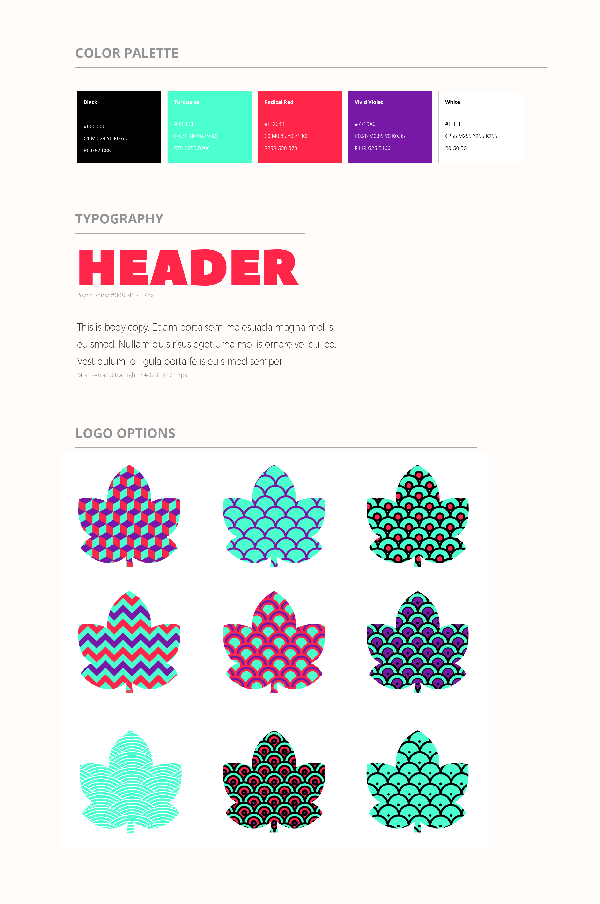

Week 11
Maandag 08-05-17
In de ochtend zijn we bij de uxu workshop verder gegaan met het vervolg op prototyping: usability testing. Het is belangrijk om een goede usertest van te voren op te zetten, ook is het handig om nog voordat je de test uitschrijft alvast testpersonen te recruiten, dit omdat het lastig is op korte termijn vrijwilligers te vinden aangezien deze niet altijd de tijd hebben. Daarnaast is het voor kwalitatieve testen niet een ramp als je vragen net wat anders stelt aangezien dit hierbij niet gaan om een wetenschappelijk onderzoek.
In de middag zijn we bij de sco workshop ons bezig gaan houden met semiotics. Semiotics is het analyseren van beeld en geluid aan de hand van visuele boodschappen om zo een betekenis ergens aan te geven. Hieronder volgt de uitwerking van de lesopdracht:
Betekenaar
Polaroid foto’s, twee dezelfde gezichten, opschrift onder de foto’s, grijze achtergrond.
Betekende
De grijze achtergrond maakt de volledige poster triestig dit gecombineerd met twee dezelfde gezichten en de verschillende opschriften eronder zorgt ervoor dat het duidelijk word dat ze hiermee willen zeggen dat je je niet moet laten leiden door alleen wat je ziet.
Betekenis
De betekenis van deze ad is om aandacht te trekken voor discriminatie. Deze reeks posters zijn een campagne van Ambulante. Dit is overigens een ideële reclame, bedoel om informatie te geven en niet om een product te verkopen.
Opmerking
Mogelijk is het voor een soort stichting maar dit wordt niet heel erg duidelijk op de poster. Onderaan de poster staat naast Ambulante ook Kellog foundation, maar daardoor is het nog niet direct duidelijk waarvoor het precies is. Wel staat er onder Ambulante in kleine letters en bijna niet te lezen: documentary tour.
 Bron afbeelding
Bron afbeelding
Week 10
Woensdag 03-05-17
In de ochtend hebben we feedback gekregen op ons concept. Hieruit kwam naar voren dat ons concept nog niet erg solid is. Het belangrijkste voor ons is om de unique selling point (usp) uit te werken. Wat maakt ons festival uniek? Waarom zouden de jongeren naar ons festival gaan? dat zijn vragen die we onszelf hierbij moeten stellen.
Week 10
Dinsdag 02-05-17
Vandaag hebben we feedback gehad op ons concept. Deze feedback was als volgt: De belangrijkste vraag die we onszelf moeten stellen was of het polsbandje meerwaarde heeft. Als we echt het polsbandje willen toevoegen moeten we het verder uitwerken zodat bovenstaande wel het geval gaat zijn.
Week 10
Maandag 01-05-17
‘s Ochtends hebben we een workshop prototyping gehad. Hieruit heb ik onder andere geleerd dat prototyping niet alleen belangrijk is om een beeld te creëren van het concept of product dat je aan het maken bent, maar ook dat het enorm helpt om een goede usertest te houden. Met prototypes kun je een gebruiker snel even een onderdeel van het volledige concept laten testen, zodat je daarop verder kunt itereren. Prototypes hoeven niet perse een volledig eerste versie van een product te zijn, maar kunnen ook een onderdeel van een product zijn.
In de middag zijn we bij de workshop SCO verder gegaan met concept strategie. Hierop zijn we verder gegaan met de contentkalender en de customer journey. Tijdens deze workshop heb ik vooral geleerd dat het belangrijk is om goed te weten welk verhaal je aan de doelgroep wilt vertellen met je concept. Dit is zo belangrijk omdat dit verhaal overal terugkomt, zowel in de reclamecampagne als het product zelf.
Week 9
Woensdag 19-04-17
Vandaag hebben we de gekregen feedback opgepakt en zijn we eindelijk tot een huisstijl gekomen voor ons concept. Nu dit vaststaat, hebben we meteen meer houvast en kunnen we beter doorwerken.Hieronder de huisstijl.

Week 9
Dinsdag 18-04-17
In de ochtend hebben we ons concept voorgelegd bij de klant. Hieruit kwam naar voren dat ons concept erg breed is. Hiermee werd bedoeld dat de er nog geen duidelijke keuzes zijn gemaakt waardoor het concept nog niet goed in elkaar zit. Daarnaast hebben we in de middag een workshop javascript libraries maken gehad. Hieruit heb ik geleerd om op een efficiënte manier te programmeren zodat de code gemakkelijk opnieuw en door anderen gebruikt kan worden. Dit werkt door middel van functies. Hieronder een voorbeeld van mijn library.
Week 8
Woensdag 12-04-17
Vandaag hebben we feedback gekregen over ons concept. Hieruit is naar voren gekomen dat ons concept potentie heeft, maar dat we het moeten verkleinen. Met andere woorden ons concept is nog te ruim wat ervoor zorgt dat de duidelijkheid wegvalt. Daarnaast hebben we ook nog de tip gekregen om te gaan kijken naar de serie abstract en dan vooral de derde aflevering. Hierin wordt veel uitgelegd over event design wat voor ons heel belangrijk kan zijn op dit moment.
Week 8
Dinsdag 11-04-17
In de middag hebben we een college gehad waarbij we in korte tijd een schets met toelichting, userstories en javascript libraries hebben gemaakt voor de festival site. Hieruit heb ik niet heel veel geleerd aangezien we een groot deel daarvan al gedaan hadden voor ons concept. Wat ik wel ervan heb geleerd is om mijn perfectionisme te laten vallen in dat stadium omdat het in deze fase nog niet gaat om een perfect plaatje.
Week 8
Maandag 10-04-17
De dag begonnen we met 2 colleges, hieruit heb ik geleerd om met behulp van invision snel een prototype neer te zetten. Dit is ook belangrijk omdat klanten natuurlijk iets visueels willen zien en willen ervaren hoe het werkt. Invision is een erg handige tool om snel een prototype in te zetten voor onder andere usertest. Hieronder volgt mijn invision prototype met 2 interacties.
Bron afbeelding
Week 7
Maandag 03-04-17
In de ochtend hebben we een gastlezing van onze opdrachtgever gehad over usertesting en datavisualisatie. Hieruit heb ik geleerd dat het heel belangrijk is om zoveel mogelijk informatie voor en tijdens het bedenken en uitwerken van een concept te verkrijgen. 's Middags heb ik samen met Annemijn de personas gemaakt en uitgewerkt aan de hand van de verkregen informatie van de interviews.
Week 6
Woensdag 29-03-17
De feedback van gisteren zijn we vandaag gaan oppakken. We zijn begonnen met maken van ons scrum bord. Aansluitend zijn we userstories gaan bedenken aan de hand van de opdracht en doelstellingenHierop volgend zijn we de middelen gaan bedenken die willen gebruiken. Daarna heb ik samen met Annemiek en Robin aan de hand van de middelen de customer journey uitgewerkt in Illustrator.
Week 6
Dinsdag 28-03-17
Vandaag zijn we naar Arnhem gegaan om de twee uitgekozen concepten te pitchen voor de opdrachtgever. Hier hebben we de volgende feedback op gekregen:
- Onderzoek en persona’s laten zien, dus laten zien hoe je tot de concepten bent gekomen.
- Het concept iets aantrekkelijker maken.


Week 6
Maandag 27-03-17
's Middags hebben we een workshop Git gehad. Hieruit heb ik geleerd dat Git een ontzettend handig tool voor programmeren is. Hiermee kun je gemakkelijk samen aan een stuk code werken zonder dat je alles nog moet samenvoegen. Hierdoor kun je efficiënter werken.

Week 5
Woensdag 22-03-17
Vandaag heb ik samen Annemiek gewerkt aan de slides voor de pitch zodat deze visueel sterk zouden zijn. Daarnaast hebben we een workshop Design gehad. Helaas heb ik daar niet echt iets nieuws uit geleerd aangezien nagenoeg alles van de workshop al eens in semester 2 en 3 behandelt is geweest.
Week 5
Dinsdag 21-03-17
In de ochtend hebben we onze pitch geoefend. Hieruit kwam naar voren dat we ons onderzoek nog moesten verwerken in onze presentatie. Ook kregen we te horen dat het een heel goed idee van ons was om moodvideos te laten zien.
Week 4
Woensdag 15-03-17
In de middag hebben we een scrum workshop gehad, hier heb ik van geleerd dat je daarmee heel gemakkelijk kunt bijhouden waar we staan met onze planning. Zo kunnen we zien wie waarmee bezig is en kunnen we efficiënt te werk gaan. Vandaag hebben we de verkregen informatie van de interviews geanalyseerd en geformuleerd in ons project document. Uit de analyse kwamen interessante dingen. Een van de dingen die ik interessant vond was dat de meeste wel eens naar klassieke muziek luisterden. Hieruit heb ik geleerd dat je met interviews belangrijke informatie kunt krijgen en kunt controleren of gemaakte aannames kloppen.
Week 4
Dinsdag 14-03-17
In de ochtend hebben we een gastlezing gehad van HeyHeydeHaas. Dit was een zeer leuke en interessante lezing, vooral de humor hielp daarbij. Een van de belangrijkste dingen die ik hieruit heb geleerd is om zoveel mogelijk het tegenovergestelde te doen van wat mensen verwachten. Daardoor valt hetgeen wat je hebt gemaakt meer op, het springt er meer uit juist omdat het onverwacht is.
Week 4
Maandag 13-03-17
Vandaag hebben we een uitgebreid hoorcollege gehad over communicatie en strategie. Deze week staat daar ook in het teken van. Wat ik vooral heb geleerd uit dit college waren de methodes die je kunt gebruiken om tot een duidelijk communicatieplan te komen.
Week 3
Maandag 06-03-17
Rond 12u hebben we een korte maar belangrijke uitleg gehad over stage. In de daarop volgende les zijn we bezig geweest met media technieken en campagnes waar die technieken in gebruikt worden. Hiervan was het vooral interessant om te weten wat de mogelijkheden op het gebied van media technieken en campagnes zijn. Deze week staat in het teken van usertesting. Tijdens de les vandaag werden een aantal belangrijke dingen besproken. De belangrijkste punten waren vooral: Wanneer stel je welke vragen (Open / Gesloten). Hoe kun je op de juiste manier doorvragen? Het opstellen van een interviewen en het houden ervan (Documentatie en analyse). De analyses en notities van de interviews zijn hieronder te downloaden:
Interviews
Week 2
Dinsdag 21-2-17
Rond 12u hebben we een korte maar belangrijke uitleg gehad over stage. In de daarop volgende les zijn we bezig geweest met media technieken en campagnes waar die technieken in gebruikt worden. Hiervan was het vooral interessant om te weten wat de mogelijkheden op het gebied van media technieken en campagnes zijn.
Week 2
Maandag 20-02-17
Vandaag hebben we een gastcollege gehad van Mediamonks. Dit was een erg interessante presentatie. Hieruit ik heb veel geleerd over het bedrijf zelf, maar ook over de omvang van het maken van een site. Een aantal belangrijke Javascript Libraries die zeker handig zijn: - Greensock (GSAP) Voor animeren - OpenGL Wat ook erg belangrijk is om te onthouden is de bronvermelding bij toekomstige onderzoeken.
Week 1
Woensdag 15-02-17
Vandaag hebben we feedback gekregen op onze eerste concepten. Hieruit kwam naar voren dat we teveel bezig waren met de verpakking van de concepten, waardoor we geen duidelijke boodschappen hadden. Deze feedback was erg fijn, omdat we nu tot betere concepten zijn gekomen en de boodschappen helderder zijn.
Week 1
Dinsdag 14-02-17
‘s Ochtends zijn we gaan voortborduren op de campagnes die we gezocht hebben. Als campagne vond ik Coca Cola freestyle erg interessant vooral omdat de campagnes behoorlijk groot en uitgebreid zijn. Hieronder volgt de kleine opdracht: Het concept van Coca Cola is genieten. Met de campagne willen creëren dat de mensen lol hebben, plezier maken en genieten. Zo willen ze ervoor zorgen dat de mensen Coca Cola refereren aan plezier en genieten. De freestyle campagne is een voorbeeld om de mensen te laten genieten. Een passende uiting zou bijvoorbeeld het volgende kunnen zijn: Het uitdelen van gratis Coca Cola bij de boarding op een vliegveld. Mensen worden vrolijk van gratis spullen, het krijgen van een gratis drankje zorgt voor meer plezier. Het komt als een verrassing.je moet ervan genieten, net alsof je op vakantie gaat! Door deze opdracht en het hoorcollege heb ik vandaag gemerkt hoe er tijdens het convergeren compleet nieuwe ideeën kunnen ontstaan. Hieruit bleek ook dat deze ideeën veel sterker waren dan de 200 ideeën van maandag. Ook was het interessant om te zien hoe snel we eigenlijk van ideeën tot concepten zijn gekomen.

Week 1
Maandag 13-02-17
Vandaag hebben we een lezing gehad over concepting. Dit was erg interessant, van deze lezing heb ik onder andere geleerd wat het verschil tussen een concept en een idee is. Daarnaast heb ik tijdens de workshop sco wat geleerd over verschillende brainstormtechnieken.
Campagne ad: http://www.coca-cola.co.uk/stories/new-coca-cola-freestyle-app-lets-you-create-the-perfect-drink